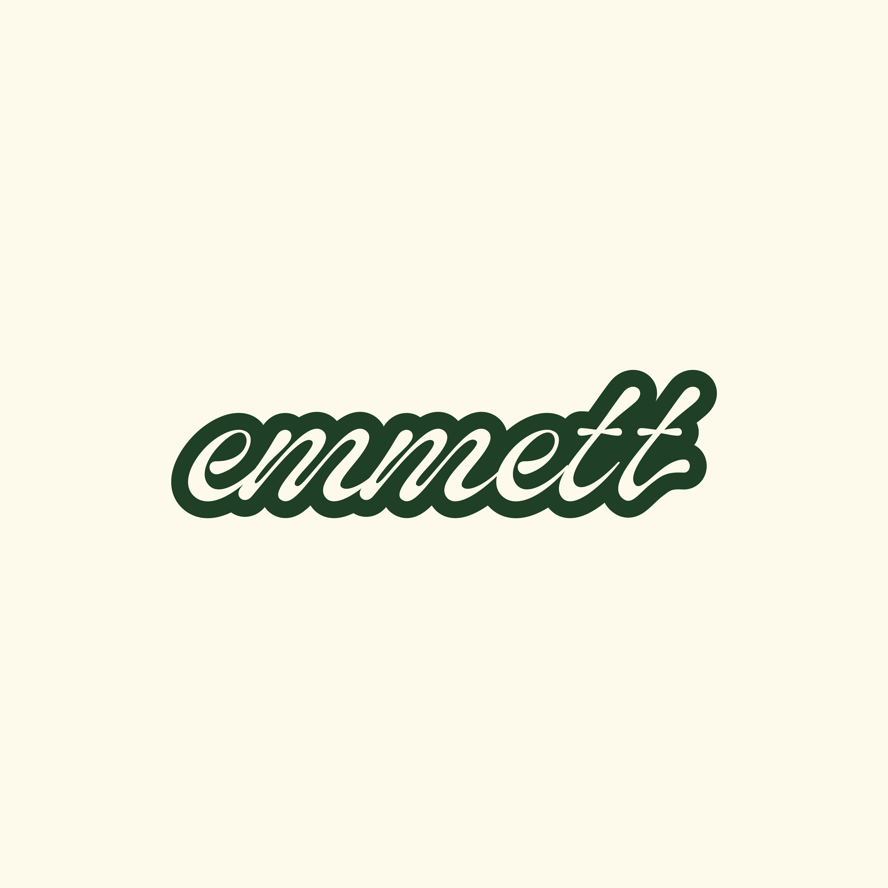

Main Logo

The client approached me with a request for a logo design for a new
Philadelphia restaurant pop-up/collaboration that blends Levantine
cuisine with French, Italian, and other Mediterranean, North African,
and Middle Eastern influences. They asked that the logo incorporates an
elegant, cursive typeface and a dark green color palette.
After careful consideration of the client's requirements and extensive
research into Levantine cuisine, I crafted a unique logo that
effectively captures the essence of the restaurant's concept. The logo
features a flowing, elegant cursive typeface in a deep shade of forest
green, evoking a sense of sophistication and luxury.

Menu Design